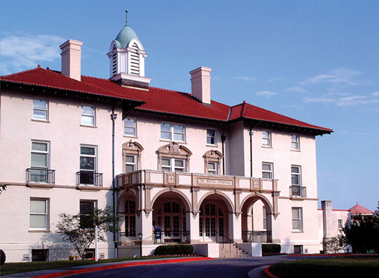

About NCSSM
Written by:
NCSSM is a public magnet school in Durham, NC. Every year, thousands of applicants from almost every county in NC go through the competitive application process to NCSSM. The school attracts top talent and as a result caters to an excellent learning environment. NCSSM is a school of academic intensity and sleep-deprived students, but it offers very advanced, specific, college-level courses to fuel any students' passions.
In the class of 2014 application process, there were well over 1000 applicants to the school. Unfortunately for most, only about 340 positions were open, which has resulted in a very talented group of students who have represented NCSSM well regionally, nationally, and even internationally. Some of NCSSM students' achievements are:
- First place in Singapore Mathematics Challenge
- Conrad Spirit of Innovation awards
- Numerous awards at the International Science and Engineering Fair
- Numerous awards at Siemens Research competition
- Intel Science Talent Search finalists
- Science Olympiad state championship wins
- Health Occupations Student competition wins
- and many more
NCSSM also offers a multitude of research, mentorship, and internship opportunities. Students can apply to four research programs - Research in Biology, Math, Physics, Computational Sciences. Students can also apply to mentorship, in which students research a topic of their own with a mentor in the surrounding area. Mentors are usually professors at nearby universities, such as Duke and UNC. Lastly, students can applyfor internships over the summer. Companies and universities are always excited to get motivated, intelligent students to help with their projects and learn about specialized careers.
Engineering and Technology Department at NCSSM
Written by:
Introduction
The goal of the NCSSM Engineering and Technology curriculum is to provide multiple fronts of quality. It provides a hands-on learning experience through gateway courses that enable students to explore a variety of fields of engineering and technology, learn fundamental problem-solving skills, and help inform their decisions about college majors and professions. It also provides students with the opportunity to take relevant college-level courses, which will give them a head start on intensive undergraduate programs, if they decide to pursue an undergraduate degree in engineering or technology. NCSSM's Engineering and Technology department also hosts clubs and teams related to technology - TSA, Science Olympiad, and Team 900 Robotics.
Technology and Engineering Courses
Introduction To Mechanical Engineering
This course is designed to introduce students to mechanical engineering and related fields. Students explore topics in the fields of mechanical, civil, chemical, and biomedical engineering. Using a combination of problems sets, activities, design projects, and laboratory modules, students learn first-hand how engineers apply the principles of mathematics and science to solve problems. Topics include mechanisms, statics, dynamics, fluid dynamics, thermodynamics, and materials.
Introduction to Electrical Engineering
This course is designed to introduce students to the study and practice of electrical engineering. Students explore topics related to the fields of electrical, electronic, computer, and systems engineering. Using activities, design projects, and laboratory modules, students learn first-hand how engineers apply the principles of science and mathematics to solve problems. Topics include circuits, electronics, and control systems.
Architecture and Civil Engineering
This course provides an overview of the interrelated fields of architecture and civil engineering. Students use industry-standard software (Revit Architecture) to design buildings and illustrate the engineering basis of those designs. Driven by hands-on projects and activities, this course covers topics such as the roles of architects and civil engineers, architectural history, project planning, site planning, building design, and project documentation and presentation. A major focus is the development of a local property parcel, giving students the opportunity to model the real-world experiences of architects and civil engineers. Students work in teams on all hands-on projects, thus developing teamwork and leadership skills.
Introductory Robotics
This course provides students with the opportunity to develop skills in simple basic programming of an autonomous robot, radio controllers, simple sensors and tracking, gaming strategy, teamwork, design, and some basic tool skills. The instruction is both traditional and project-based. A significant portion of the course is dedicated to the design and completion of an instructor-approved individual project chosen by the student.
Statics
Students will learn how to apply the principles of mechanics to problems of equilibrium. Topics include: vectors, moments, analysis of force systems (trusses, frames, and machines), rigid body equilibrium, center of gravity, and moment of inertia.
Biomedical Instrumentation
In this course students will learn the basic principles of electronic instrumentation with biomedical examples. Concepts of analog signal processing, filters, input and output impedances are emphasized. Students are exposed to system design concepts such as amplifier design and various transducers. Laboratories reinforce basic concepts and offer the student design opportunities in groups. Course will include a final design project and paper.
AP Computer Science A (I)
This introductory course emphasizes the design and implementation of basic computer programs. Students begin by learning the programming language Python. This is an object-oriented scripting language with very simple structure that is used to develop basic programming and problem-solving skills.
AP Computer Science A (II)
Students transfer their skills from CS402 to Java and learn how to write a simple Java graphical user interface (GUI) program. Students who complete this course are able to write simple programs consisting of multiple modules. It is assumed that the student has no prior programming experience. Students learn how to design and implement Java classes. Several programming projects of increasing complexity are assigned to build the students’ skills in this area.
Other Computer Science Courses
- Advanced Computer Science Topics
- Advanced Programming
- Data Structures 1
- Data Structures 2
- Data Structures 3
- Elements of Computer Systems
Technology and Engineering Faculty
John Kirk
Instructor of Engineering
Joe LoBuglio
Instructor of Robotics
John Morrison
Instructor of Computer Science
"Chief Wizard of Computer Science"
Ershela Sims
Dean of Engineering & Technology and Engineering
Dennis Yeh
Instructor of Computer Science
NCSSM TSA
Written by:
NCSSM TSA has come together in the last two years to become a large student group on campus. Our school advisor does a great job in making executive decisions. However, he leaves most of the everyday happenings to the leadership of NCSSM TSA. On campus, we rival our school's chapter of Science Olympiad in both size and achievements. Between the two organizations, there is a healthy amount of competition and respect that draws the best performance out of both groups. In the 2012-2013 NCSSM TSA club, the leaders are Bryant Su, Nina Ondona (State President), and Willie Park (State Treasurer). Looking forward, there is nothing but pure potential for NCSSM TSA, and there are many capable hands ready to take over and continue learning to live in a technical world.
NCSSM TSA's Webmaster team has worked hard to put together a high-quality site featuring the history of news and media:
| Josh Rees-Jones |
Project leader Lead developer Content writer |
| Dylan Vinesett |
Lead content writer Assistant developer |
| Svend Larson | Content writer |
| Akash Patel | Content writer |
| Willie Park | Content writer |
Content and images from NCSSM's website.